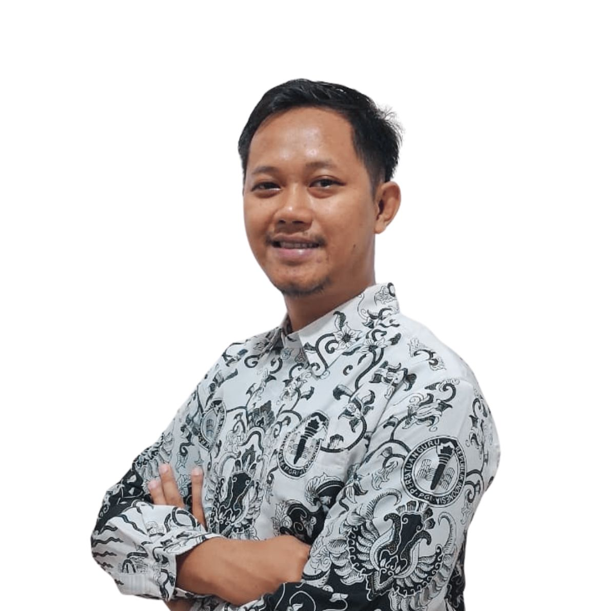
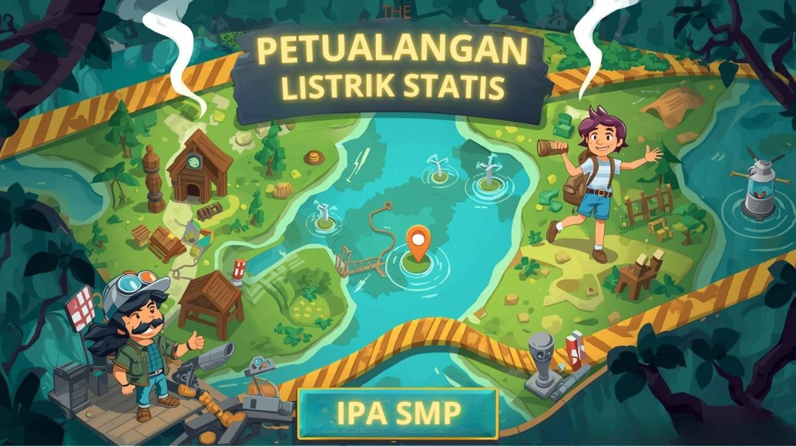
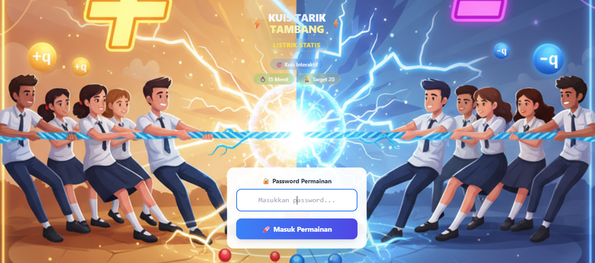
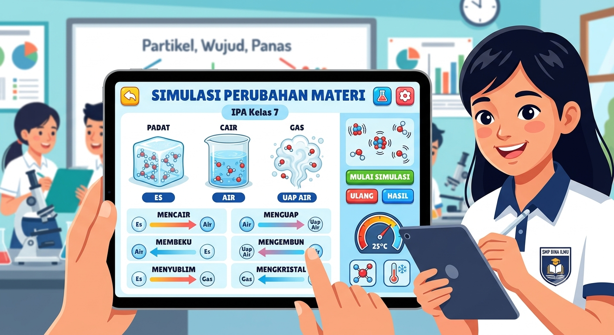
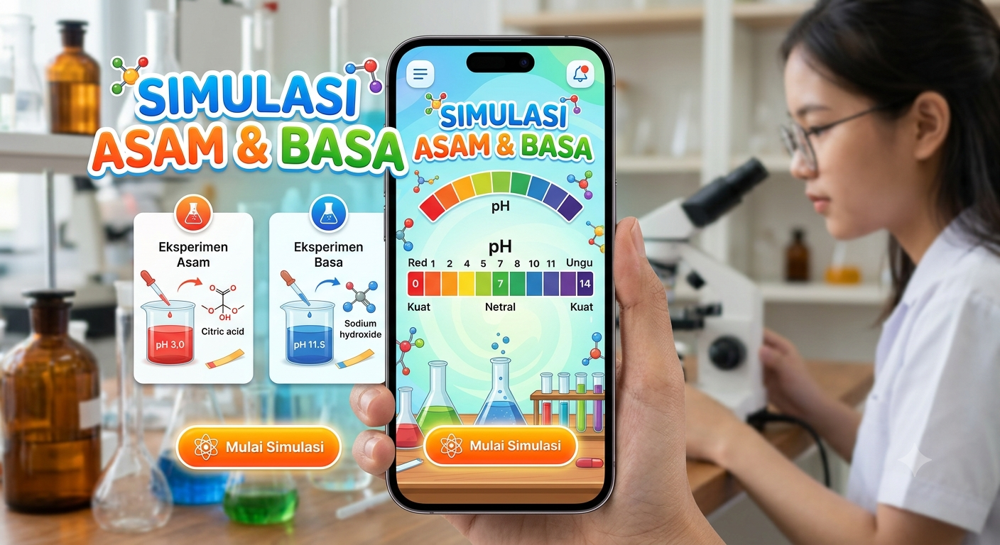
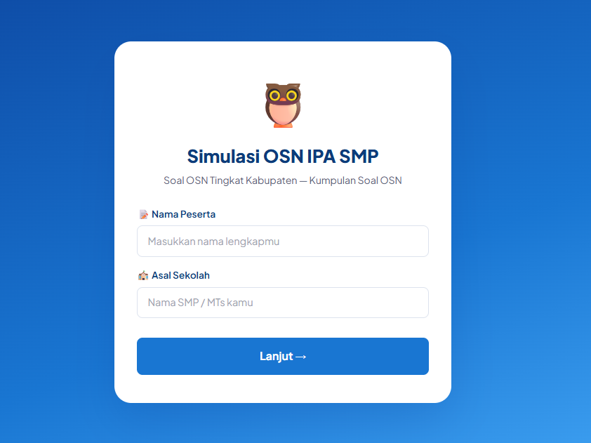

Guru IPA
Menghadirkan pengalaman belajar IPA yang menyenangkan melalui media interaktif berbasis teknologi dari sel hingga alam semesta, semuanya bisa dijelajahi bersama!

Media berbasis digital yang dirancang untuk membuat belajar IPA lebih menyenangkan dan bermakna.

FisikaBelajar listrik statis seru dengan game map petualangan listrik statis.
Mainkan Media
FisikaKuis yang menguji pemahaman tentang listrik statis dalam bentuk permainan tarik tambang yang bisa dimainkan berkelompok, untuk masuk permainan masukkan pasword : guruipa01
Mainkan Media
FisikaSimulasi sederhana tentang perubahan materi untuk mendukung pembelajaran konsep perubahan fisika dan kimia.
Mainkan Media
KimiaPelajari konsep asam dan basa dengan cara yang menyenangkan melalui materi interaktif, simulasi virtual, dan kuis seru.
Mainkan Media
IPASaya adalah pendidik IPA yang percaya bahwa belajar sains bisa menjadi petualangan yang mengasyikkan. Dengan menggabungkan teknologi dan kreativitas, saya merancang media pembelajaran yang tidak hanya menjelaskan konsep, tetapi juga membuat siswa penasaran dan terlibat aktif.
Setiap MPI yang saya buat dirancang berdasarkan prinsip belajar sambil bermain—mengubah abstraksi IPA menjadi pengalaman nyata yang berkesan bagi generasi digital.